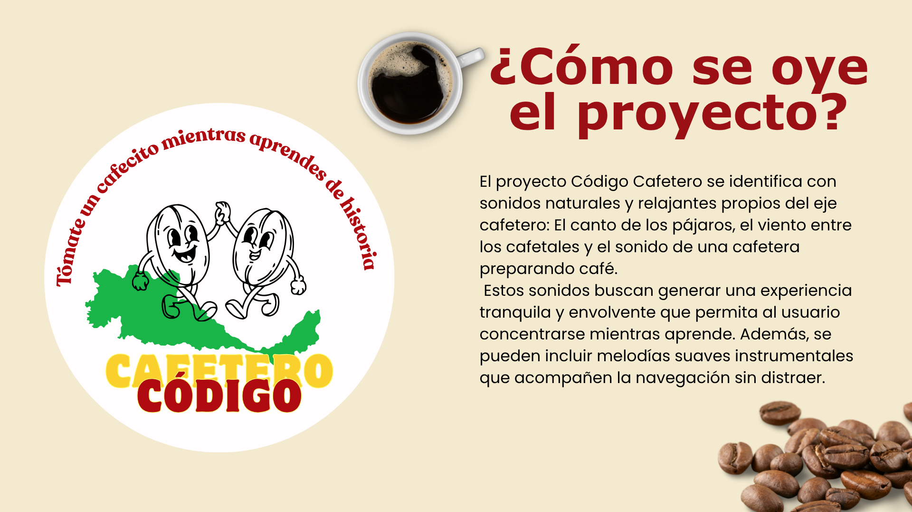
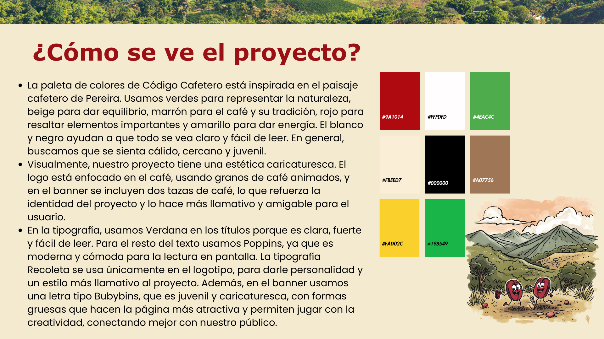
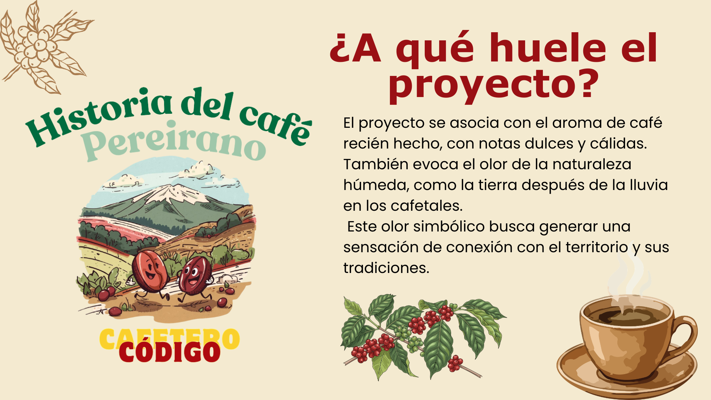
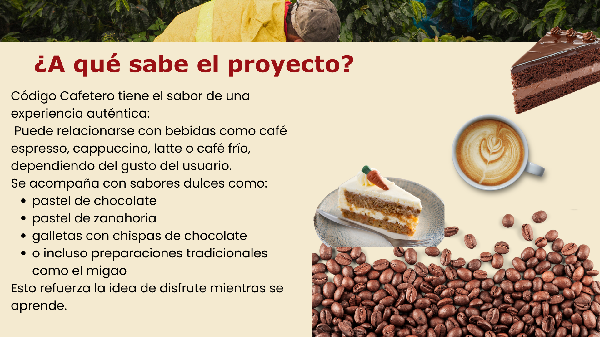
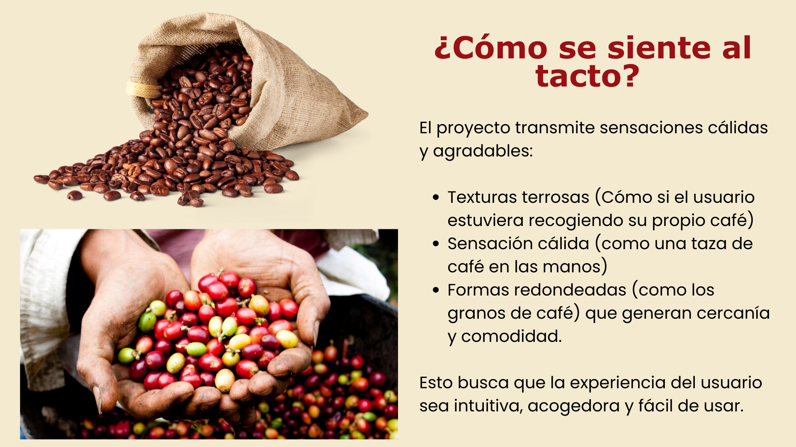
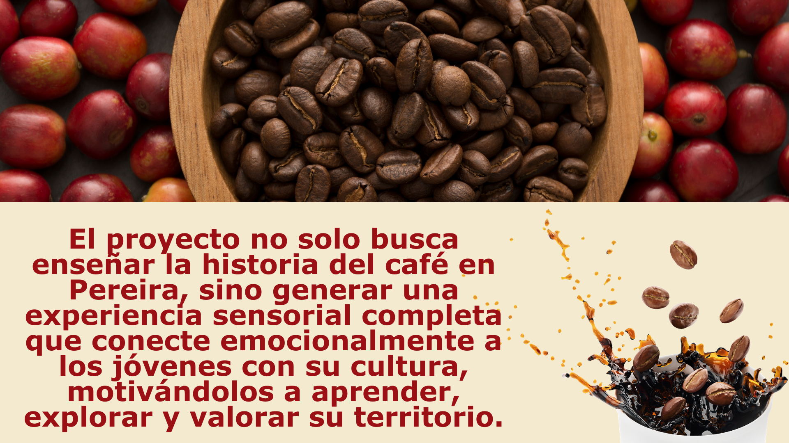

Katurro
Conoce Katurro
Estas imágenes resumen la idea principal del proyecto y su enfoque educativo sobre el café.






Contacto
¿Cómo contactarnos?
Si deseas conocer más sobre Katurro, puedes comunicarte con el equipo del proyecto para recibir información adicional sobre su propósito educativo y su desarrollo.
- Correo: katurro@gmail.com
- Instagram: @katurro
- Ubicación: Pereira, Risaralda